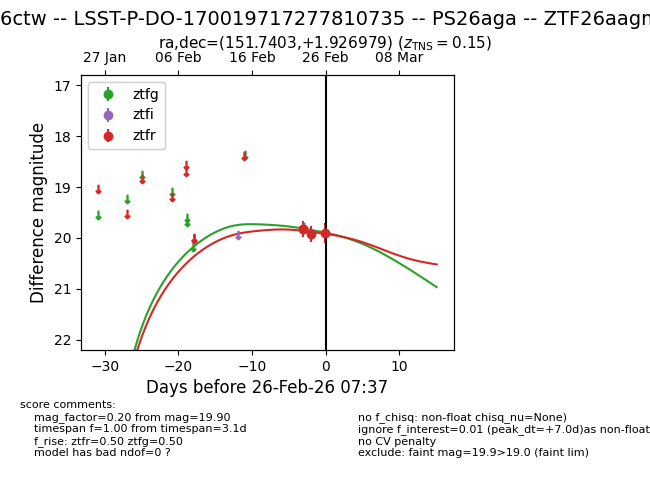
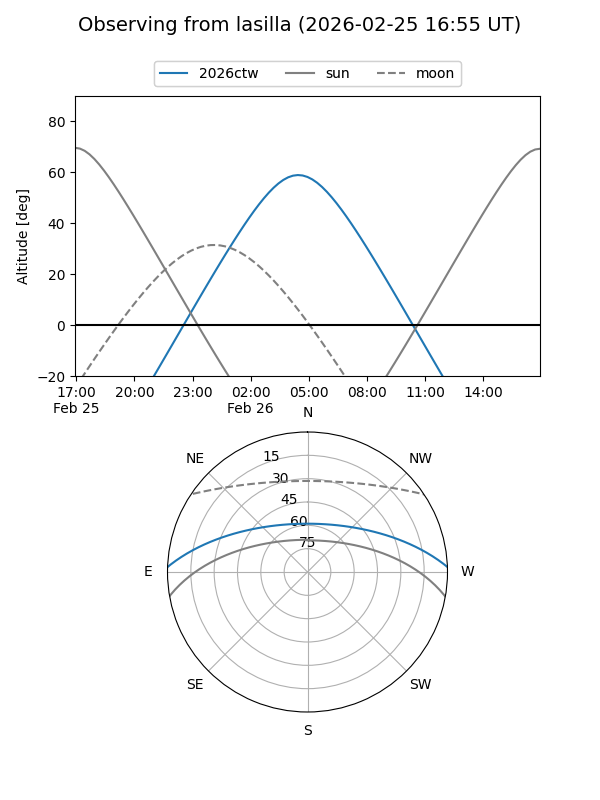
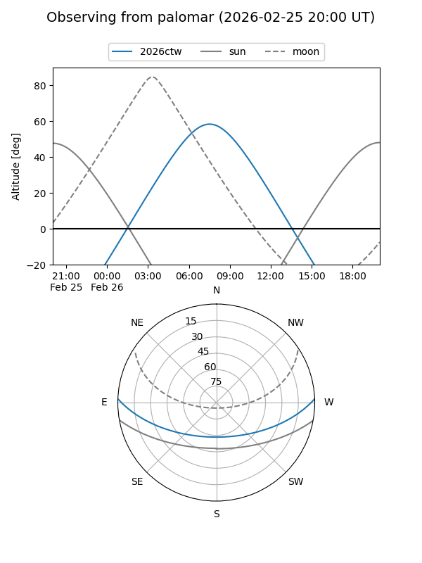
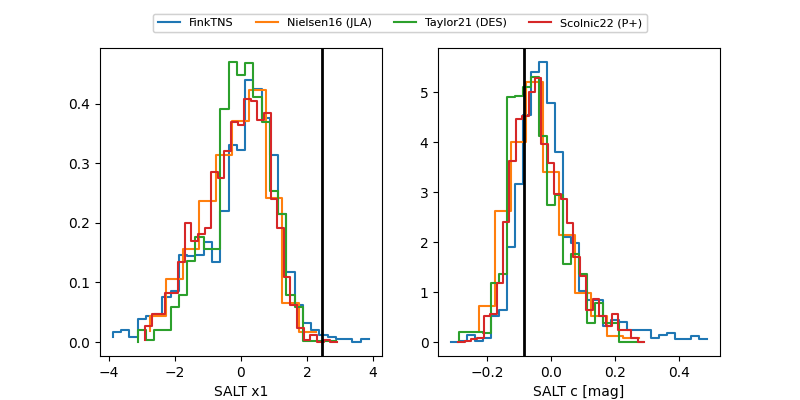

2026ctw
Target 2026ctw at 2026-02-26 07:38
Aliases and brokers:
FINK: link
Lasair: link
ALeRCE: link
TNS: link
YSE: link
alt names
ZTF26aagmisy (ztf,fink_ztf)
2026ctw (tns,yse)
PS26aga (panstarrs)
LSST-P-DO-170019717277810735 (lsst)
Coordinates:
equatorial (ra, dec) = 151.7403,+1.92698
equatorial (HMS+DMS) = 10:06:57.68,+01:55:37.13
galactic (l, b) = (238.4246,+43.26869)
Flags:
confirmed ia
Photometry:
last ztfg=19.81, ztfr=19.90
1 ztfg, 3 ztfr detections
Lightcurve

Visibility


Additional plots
